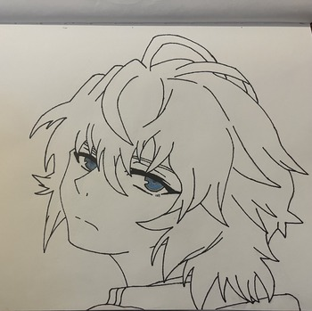
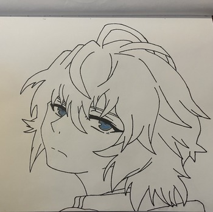

Drawings
Drawing is one of my favorite ways to pass the time. Most of my insperation comes from anime. Here are some of my personal favorite drawings that I have drawn.

This drawing was inspired by the charcter Akame from the anime Akame ga kill and is one of my favorite drawings that I have made. I chose a specific scene that I liked and did my best to draw it and shade it properly.
Drawing 2
I took insperation for this drawing from the anime classroom of the elite. The character I drew
is the main charcter Ajanokoji, he potrayed to be smart and composed which is why he is my favorite
charcter of the anime. I used an image I found on google to use as refernce for his pose.
Drawing 3

This drawing is from the anime Sephra of the end anime and the character that I drew
Mikaela. The anime is about vampires and this charcter was turned into a vampire, and is one of my
favorite charcters in the show.
I took insperation for this drawing from the anime classroom of the elite. The character I drew is the main charcter Ajanokoji, he potrayed to be smart and composed which is why he is my favorite charcter of the anime. I used an image I found on google to use as refernce for his pose.
Drawing 3

This drawing is from the anime Sephra of the end anime and the character that I drew
Mikaela. The anime is about vampires and this charcter was turned into a vampire, and is one of my
favorite charcters in the show.
This drawing is from the anime Sephra of the end anime and the character that I drew Mikaela. The anime is about vampires and this charcter was turned into a vampire, and is one of my favorite charcters in the show.